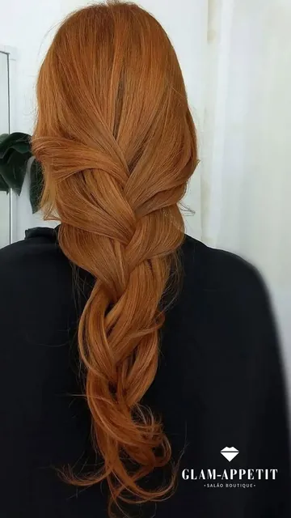
Cobre Veneziano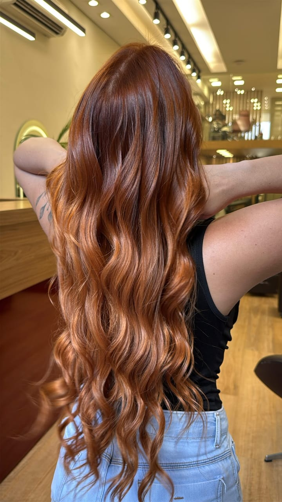
Belo Horizonte · Coloração autoral
Ruivo intenso, sem descolorir o fio.
Cor que impressiona e cabelo que continua saudável. Cortes, unhas e make no mesmo endereço.
Resposta pelo WhatsApp, sem compromisso · Terça a sábado, a partir das 10h.
+22 mil@glam_byhugoantunnes
Kérastasedo primeiro ao último fio
Belo Horizontesalão com hora marcada
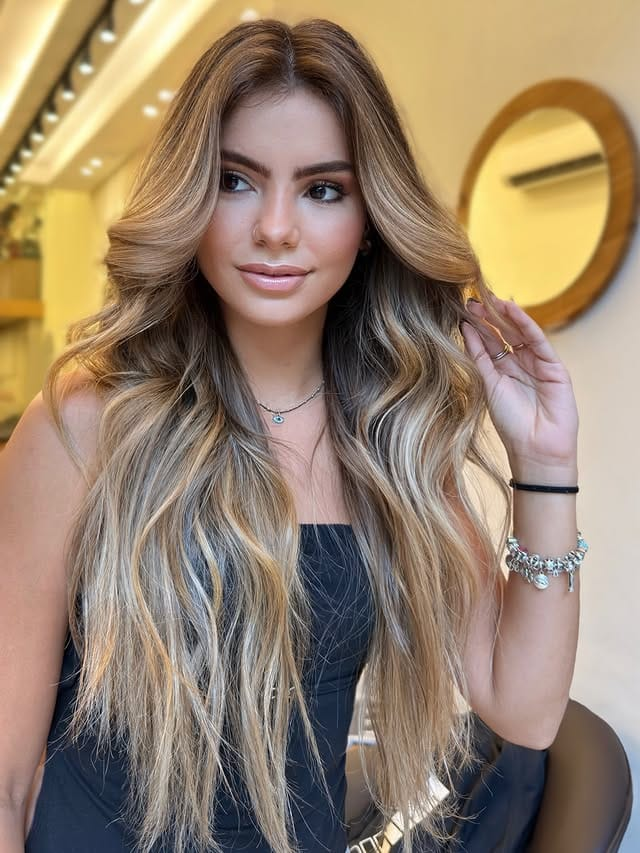
A assinatura da casa
O ruivo que não pede descoloração.
Nosso jeito de colorir: pigmento de joia sobre o fio preservado.
A maioria dos ruivos marcantes começa clareando o cabelo até o limite — e é aí que o fio sofre. Aqui é o contrário. A cor entra intensa sem passar pela descoloração, então o cabelo sai colorido e inteiro. É esse trabalho que virou a nossa marca, o mesmo que você vê no feed.
- iLeitura do fio
Antes da cor, a gente avalia o estado do seu cabelo. Nada de fórmula pronta.
- iiCor sem descoloração
Pigmento intenso sobre o fio preservado, sem clarear além da conta.
- iiiSelagem Kérastase
Nutrição e brilho no fim, para a cor durar mais tempo.
O que fazemos
Da raiz à ponta das unhas, tudo aqui.
Você marca a cor e resolve o resto na mesma cadeira. Homem, cabelo cacheado e cor autoral têm lugar aqui.
A carta de cores da casa — passe o dedo pra ver o seu tom.
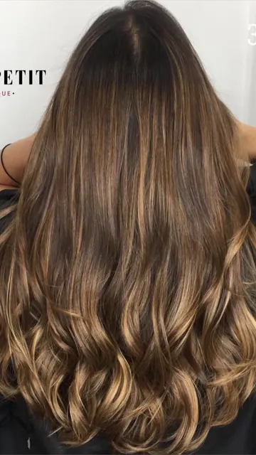
Morena Iluminada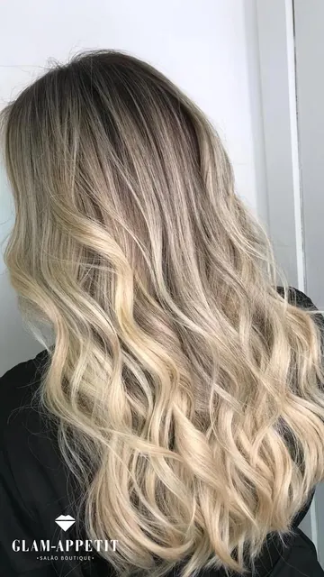
Loiro Pérola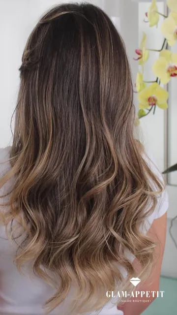
Mel Dourado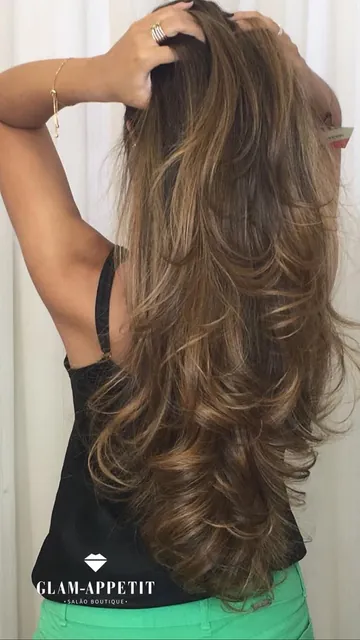
Chocolate GlossyPadrão de cuidado
No seu cabelo, só o que usaríamos no nosso.
Trabalhamos com Kérastase do começo ao fim do atendimento.
Cor bonita sem cuidado dura pouco. Por isso a linha que passa no seu fio é Kérastase, da lavagem à finalização. É o que sustenta o brilho depois que você sai daqui.
Agendar no WhatsApp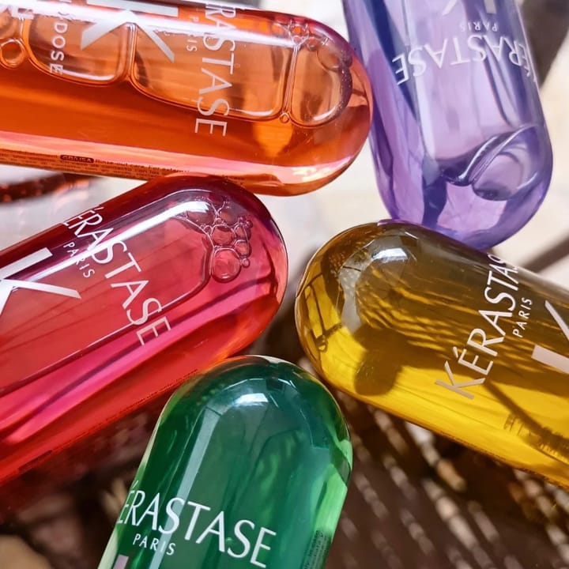
Mãos de joia
Unhas com acabamento de joalheria.
Do coral que rouba a cena à francesinha delicada de todo dia. Formato, cor e brilho pensados fio a fio — do jeito que a gente cuida do cabelo.
Agendar unhas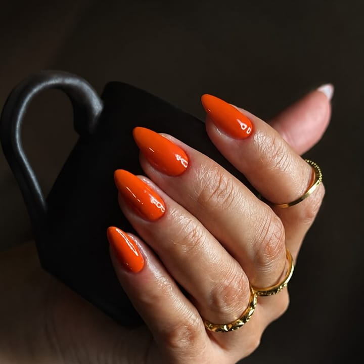
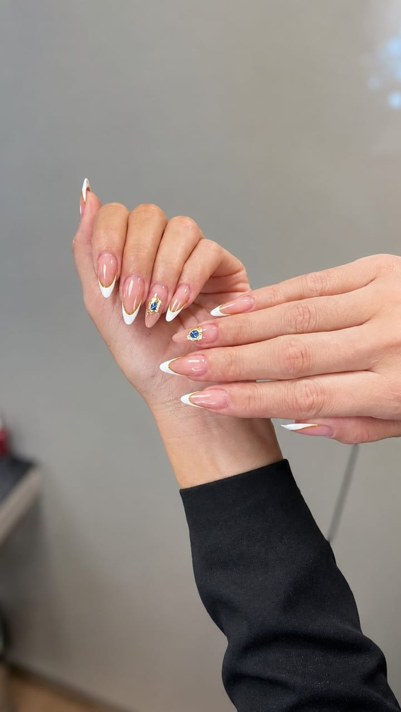
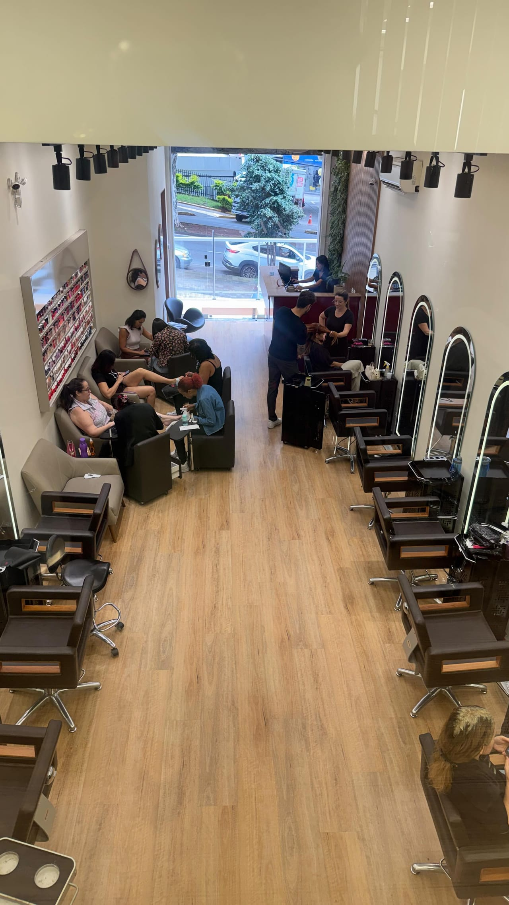
O salão que você conhece do feed, por dentro.
Estações de cabelo, área de unhas e uma vitrine que dá gosto de passar. Um espaço pensado para você sentar, relaxar e sair diferente do jeito que chegou.
Belo Horizonte · Terça a sábado, a partir das 10h
Cada cabeça, um projeto só dela.
Nenhuma cor sai igual à outra porque nenhum cabelo é igual ao outro. Passe o olho — é provável que o que você procura já esteja aqui.
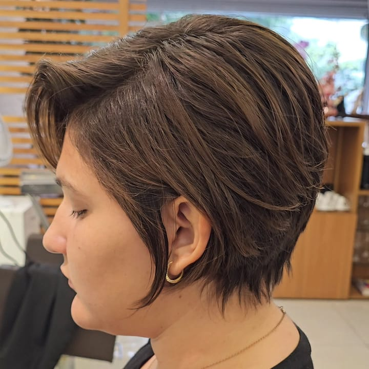
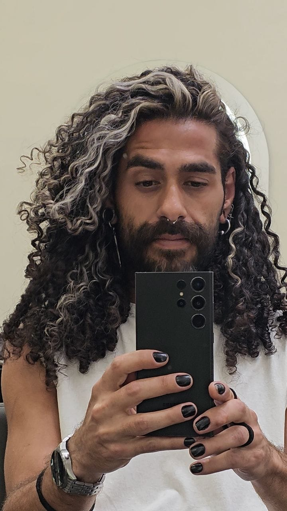
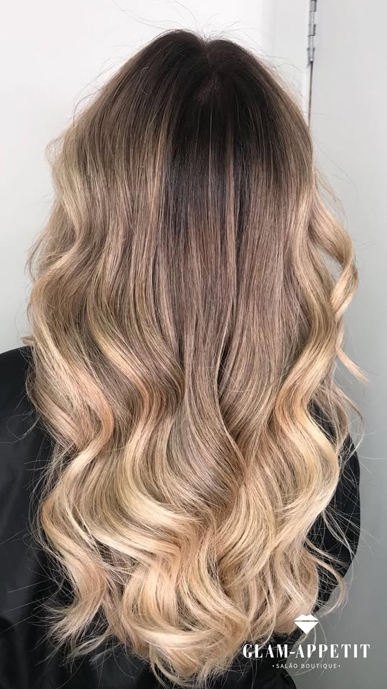
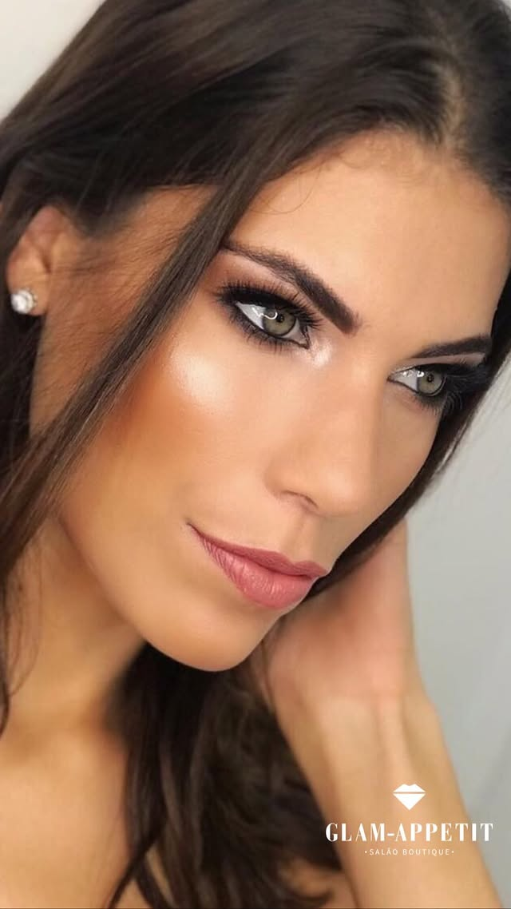
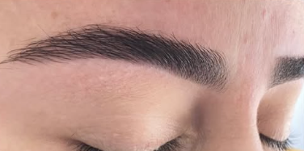
O que elas dizem ao levantar da cadeira.
Frase curta e específica sobre a cor ou o cuidado. Sem elogio genérico.
Priorizar quem cita o ruivo sem descoloração ou o fio preservado.
Priorizar semelhança com a leitora (mesma dor/desejo).
Enquanto isso, o trabalho está todo lá: @glam_byhugoantunnes · +22 mil
Hugo Antunnes na sua cor.
A mão por trás do ruivo que virou marca.
O Glam-Appetit é a casa de Hugo Antunnes, e são mais de 22 mil pessoas acompanhando o trabalho no Instagram. Cada cor que sai daqui passa pelo mesmo olhar autoral — o mesmo que fez do ruivo sem descoloração a assinatura da casa.
Ver no InstagramVem marcar
Seu horário começa com uma mensagem.
Ruivo intenso, fio preservado — e tudo mais no mesmo lugar.
Clique no botão, o WhatsApp abre com a conversa pronta. Conte o que você quer fazer e mande uma foto do seu cabelo hoje, se puder. A gente responde com o melhor horário e tira suas dúvidas antes de você vir.
- Endereço
- Belo Horizonte — MGEndereço completo + CEP a confirmar
- Horário
- Terça a sábado, das 10h às [fechamento a confirmar]Domingo e segunda fechado
- Resposta rápida em horário comercialNúmero a confirmar